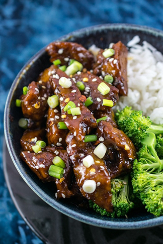

Mongolian Seitan Vegan Beef
Home
Bringing some Mongo flavor straight to you

Pan-fried seitan pieces are tossed in a sweet garlic ginger soy sauce to make this meatless Mongolian beef.
Ingredients
Mongolian Beef-less Sauce
- 2 tsp vegetable oil
- 1/2 tsp minced or grated ginger
- 3 cloves minced or grated garlic
- 1/3 tsp Chinese five spice
- 1/3 tsp red pepper flakes
- 1/2 cup low-sodium soy sauce
- 1/2 cup + 2 tbsp brown sugar
- 2 tsp cornstarch
- 2 tbsp cold water
Crisped Seitan
- 1 and 1/2 tbsp vegetable oil
- 1 lb homemade seitan (16 oz.) (or use store-bought seitan), cut into 1-inch pieces
For serving
- toasted sesame seeds (optional)
- sliced scallions (optional)
Let's get cooking!
To make the sauce
- Heat the vegetable oil in a small saucepan over medium heat. Add the ginger and garlic; stir constantly. After 30 seconds, add the five spice (if using) and red pepper flakes, and cook for 30-60 seconds more, until fragrant.
- Add the soy sauce and coconut sugar and stir well. Reduce the heat to medium-low, and let simmer until the coconut sugar is dissolved and slightly reduced, about 5-7 minutes, stirring occasionally.
- Whisk together the cornstarch and cold water, then add it to the pan and stir. Cook for 2-3 more minutes, until the sauce becomes glossy and thickened slightly. Reduce the heat to the lowest setting and keep simmering gently until ready to add to the seitan.
Make the Seitan and finish the Vegan Mongolian beef
- In a skillet, heat the vegetable oil over medium-high heat. Add the seitan and cook, stirring frequently, for about 4-5 minutes or until slightly browned and crisped around the edges.
- Reduce the heat to low and add the sauce to the pan. Stir to coat all of the seitan pieces, and continue cooking until the sauce has adhered to the seitan. Remove from the heat and serve hot, with rice and/or vegetables of choice, and garnished with sesame seeds and scallions if desired.😈